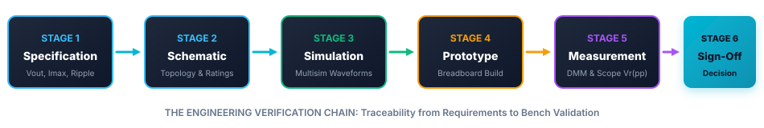
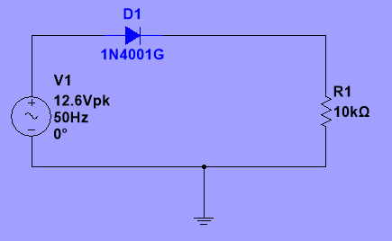
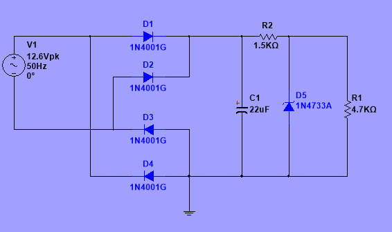
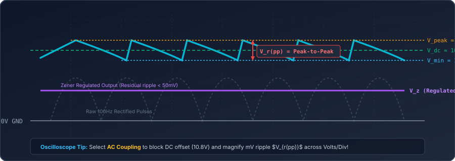

Prototype Verification Workshop

📘 Knowledge (K)
What You Must Understand
- The 6-stage Verification Chain: Specification → Schematic → Simulation → Prototype → Measurement → Conclusion.
- Full-wave ripple equation: $V_{r(pp)} \approx \frac{I_L}{2fC}$ ($2f = 100\,\text{Hz}$).
- Percentage difference metrics: $\%\,\text{Diff} = \frac{|\text{Meas} - \text{Theo}|}{\text{Theo}} \times 100$.
- Zener voltage regulation and dynamic resistance ($R_Z$).
🛠️ Skills (S)
What You Will Demonstrate
- Audit assignment brief requirements (i) to (vii) for missing evidence.
- Measure regulated DC output voltage across load with calibrated DMM.
- Use oscilloscope AC coupling to measure millivolt ripple $V_{r(pp)}$ across 22 kΩ, 10 kΩ, and 4.7 kΩ.
- Formulate a defensible, evidence-backed sign-off recommendation.
🎯 Behaviours (B)
How Professional Engineers Work
- Quality Rigour: Never sign off a circuit without numerical proof across simulation and hardware.
- Safe Bench Practice: Observe capacitor polarity and perform pre-power checks.
- Traceability: Document test conditions, scales, and component tolerances.
- Resilience: Re-test weak circuits rather than rewriting speculative reports.
Prototype Ready for Design Verification
You are operating as a Junior Verification Test Engineer at Apex Analogue Instrumentation Systems Ltd.
“Your prototype low-voltage DC power conditioning module is ready for design verification. Before another engineer can sign it off for production, you must prove that it works and provide suitable evidence.”
In commercial engineering, saying “it works because the LED lit up” or “it looks good on the breadboard” is grounds for immediate rejection. You must verify the circuit across:
Confirm your assigned engineering team group and technical requirements below:
Cumulative Analogue Diagnostic Check
Test your retrieval across Weeks 1 to 4 before powering the verification bench. Type your answer and click check:
Why must bench power be completely isolated and capacitors discharged before measuring resistance ($\Omega$) across a circuit?
In a 4-diode full-wave bridge rectifier, how many Volts are subtracted from $V_{in(pk)}$ due to simultaneous forward diode drops?
Which operational region must a bipolar transistor be driven into so that $V_{CE}$ drops below $0.2\,\text{V}$ like a closed switch?
Calculate the voltage gain $A_v$ for an inverting op-amp with input resistor $R_{in} = 1\,\text{k}\Omega$ and feedback resistor $R_f = 10\,\text{k}\Omega$:
Mathematical Metrics for Circuit Sign-Off
In a full-wave bridge with input frequency $f = 50\,\text{Hz}$, the capacitor charges twice per AC cycle ($2f = 100\,\text{Hz}$). The peak-to-peak ripple voltage $V_{r(pp)}$ across capacitor $C$ is approximated by:
- $I_L$: DC Load current in Amperes ($I_L = V_Z / R_L$).
- $2f$: Full-wave ripple frequency = $100\,\text{Hz}$ ($T = 10\,\text{ms}$).
- $C$: Smoothing capacitance in Farads ($100\,\mu\text{F} = 100 \times 10^{-6}\,\text{F}$).
- Key Takeaway: Higher load current (smaller $R_L$) causes larger ripple because the capacitor discharges faster between peaks!
Professional engineering sign-off requires calculating percentage error between theoretical design expectations and physical bench readings:
Assignment Brief Evidence Audit
Before starting practical tests, audit your current portfolio draft against all 7 formal assignment brief requirements. Check each requirement you have verified:
Don't worry if several boxes are unchecked! Today's 90-minute workshop is structured to collect, measure, and verify every single missing item.
Half-Wave Rectifier Evidence Check
Confirm that your portfolio contains complete simulation evidence for the half-wave rectifier. Note: No prototype breadboard build is required for this section.
🔮 Pre-Check Prediction: Barrier Drop
If the AC input is $12.0\,\text{V}$ RMS ($17.0\,\text{V}$ Peak), what is the theoretical peak voltage across the load resistor in a silicon half-wave rectifier?

Full-Wave Rectifier Design Verification
Verify the development of the 4-diode full-wave bridge with capacitor smoothing and Zener diode regulation:
🔮 Pre-Check Prediction: Ripple Frequency
Why does a full-wave bridge rectifier produce a ripple frequency of $100\,\text{Hz}$ from a $50\,\text{Hz}$ mains supply?

Prototype Hardware Verification
Requirement (iv) requires physical verification of your final breadboard prototype. Inspect your board against the verification chain:
Complete these safety checks before energising your bench power supply:
Regulated Output Voltage Measurements
Connect your calibrated Digital Multimeter (DMM) set to DC Volts ($20\,\text{V}$ range). Measure directly across the load resistor $R_L$ ($10\,\text{k}\Omega$).
| Domain | Expected / Target | Recorded Voltage |
|---|---|---|
| Theoretical | Zener Datasheet Nominal | |
| Simulation | Multisim Virtual DMM | |
| Measured | Bench Physical DMM |
To satisfy Pearson assessment verification, you must capture photographic evidence showing:
- The DMM display showing your reading with units ($V$).
- The test probe tips connected directly across the load resistor terminals.
- The prototype breadboard powered on.
Ripple Investigation: 22 kΩ, 10 kΩ, 4.7 kΩ
Full-wave ripple equation: $V_{r(pp)} \approx \frac{I_L}{2 \cdot f \cdot C} = \frac{V_Z}{2 \cdot f \cdot R_L \cdot C}$ ($f = 50\,\text{Hz}$, $C = 100\,\mu\text{F}$).
| Load ($R_L$) | Theory $V_{r(pp)}$ | Sim $V_{r(pp)}$ | Measured $V_{r(pp)}$ |
|---|---|---|---|
| 22 kΩ (High) | 21 mV | ||
| 10 kΩ (Medium) | 47 mV | ||
| 4.7 kΩ (Low) | 100 mV |

Multi-Domain Comparison & Engineering Sign-Off
| Parameter | Theory | Simulation | Measurement | % Diff |
|---|---|---|---|---|
| Output Voltage ($V_{out}$) | 1.70% | |||
| Raw Ripple ($V_{r(pp)}$) | 14.9% |
- 1. Do the results agree? Yes, the DC voltage is within 1.70% of theory (< 5% limit).
- 2. If not, why not? Electrolytic capacitor tolerance (±20%) and Zener dynamic resistance account for ripple variance.
- 3. What sources of error explain differences? Diode temperature rise, DMM meter loading, and mains voltage variation.
- 4. Does the final circuit meet specification? Yes, output voltage remains clamped within ±5% tolerance.
📜 Official Engineering Verification Sign-Off
Review the automatically generated defensible engineering statement below:
Final Evidence Audit & Targeted Bench Clinics
Before leaving the bench, ensure all 7 assignment brief items are fully accounted for:
Use the remaining active time to attend a tutor-led bench clinic or re-test any weak circuits:
Engineer Exit Ticket
Complete your 3-question formative exit check before leaving the lab:
Calculate theoretical ripple $V_{r(pp)}$ for a full-wave $50\,\text{Hz}$ supply with $C = 100\,\mu\text{F}$ and $I_L = 2.5\,\text{mA}$:
What condition does negative feedback prevent in an op-amp amplifier by maintaining $V_+ \approx V_-$?
What physical safety hazard occurs if an electrolytic capacitor is reverse-biased across the rectified DC supply?